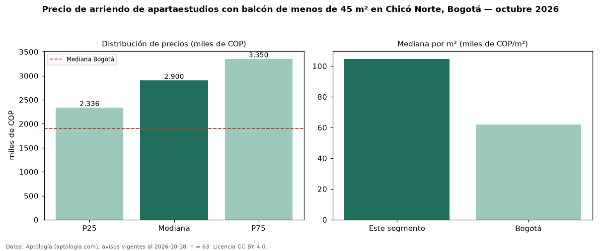

Precio de arriendo de apartaestudios con balcón de menos de 45 m² en Chicó Norte, Bogotá — octubre 2026
Con 63 avisos vigentes, el canon mediano de apartaestudios con balcón de menos de 45 m² en arriendo en Chicó Norte, Bogotá es COP 2,90 millones al mes. Frente a la mediana de los apartaestudios con balcón en arriendo de Chicó Norte (COP 3,15 millones, n = 94), queda 8 % por debajo; este segmento reúne el 67 % de esos avisos. Por metro cuadrado, la mediana es COP 104.651/m² al mes (n = 55), 15 % por encima de los apartaestudios con balcón en arriendo de Chicó Norte (COP 91.104/m²). El área mediana anunciada es 27 m². La administración mediana declarada es COP 397.500 al mes (n = 28), aparte del canon. El estrato más frecuente es 6 (71 % de los avisos con estrato). La mediana de todos los apartaestudios en arriendo de Bogotá es COP 1,90 millones (+53 % de diferencia). 55 % de los avisos con el dato declara parqueadero. Datos: Aptología (aptologia.com), CC BY 4.0 — https://www.aptologia.com/apartaestudios/bogota/chico-norte. Archivos: PDF, CSV con las cifras y gráfica PNG.

| Avisos únicos | 63 |
|---|---|
| Percentil 25 | COP 2.336.450 |
| Mediana | COP 2.900.000 |
| Percentil 75 | COP 3.350.000 |
| Mediana por m² | COP 104.651 |
Fuente: avisos vigentes de portales inmobiliarios recopilados por Aptología, deduplicados (mínimo 30 avisos únicos por celda). Precios pedidos, no cerrados. Fecha: 2026-10-18.